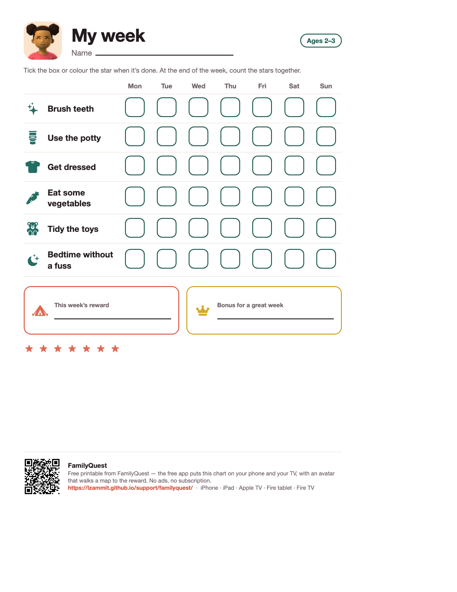
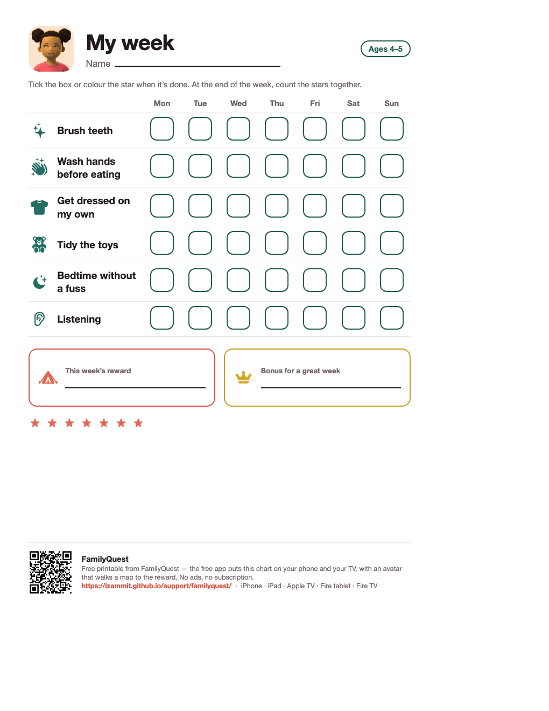

A chore chart for a 2 or 3 year old
Most chore charts are lists, and a toddler can't read a list. This one is pictures: six everyday routines, seven days, a box to tick or a star to colour, and the reward the child chose at the bottom. Print it for the fridge — or let the free app put it on your phone and your TV.
The free printable
Letter size, one page, no sign-up. Two age bands, both in English and French.

Ages 2–3 (PDF)Brush teeth · Use the potty · Get dressed · Eat some vegetables · Tidy the toys · Bedtime without a fuss
Ages 4–5 (PDF)Brush teeth · Wash hands before eating · Get dressed on my own · Tidy the toys · Bedtime without a fuss · ListeningFrench versions: 2–3 ans · 4–5 ans
What to put on it, and what to leave off
At two or three, a chart works when it shows things the child already does with you every day and can recognise from a picture. Brushing teeth, the potty, getting dressed, tasting the vegetables, tidying the toys, going to bed without a battle. Five or six is plenty — a full page of tasks is a page nobody looks at by Wednesday.
Leave off anything abstract ("be good", "share") and anything with money. A sticker, a trip to the park, an extra story: rewards that fit a week and that the child picked. The choosing is half the effect.
How to use it
Tick together, right away
The tick is the habit. Do it with the child, the moment the thing is done, every time.
Keep the reward small and weekly
Something you would happily give every week. Write it on the chart so it is in front of them all week.
Count the stars on Sunday
Count together, hand over the reward, start a fresh sheet. A toddler needs the week to end and begin again, not a running total.
The same chart, on the TV
The printable comes from FamilyQuest, a free app built for exactly this age. The same picture goals, but the child has an avatar that walks a map toward the reward as the week fills in — on a phone, a tablet, and the television the family already sits in front of. Two parents share one family; a finished week is kept as it was. No ads, no subscription, no accounts for children.
Free. No ads, no subscription, no in-app purchases.
Questions
What goes on a chore chart for a 2 or 3 year old?
Routines they already do with you, pictured: brush teeth, use the potty, get dressed, eat some vegetables, tidy the toys, bedtime without a fuss. Five or six is plenty. The point is the picture next to each one — a toddler reads the picture, not the word.
How do you use a chore chart with a toddler?
Tick together, right after the thing is done, every time. Keep the reward small, weekly, and chosen by the child — a trip to the park, an extra bedtime story. At the end of the week count the stars together and hand over the reward whatever the count; the habit is the tick, not the score.
Is there an app version of this chart?
Yes. FamilyQuest is the free app the printable comes from: the same picture goals, the child's own avatar walking a map toward the reward, on a phone, a tablet and the living-room TV. No ads, no subscription.
Is the chart available in French?
Yes — the printable and the app are in English and Canadian French.